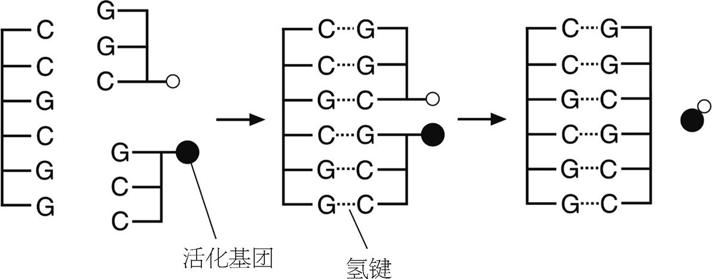
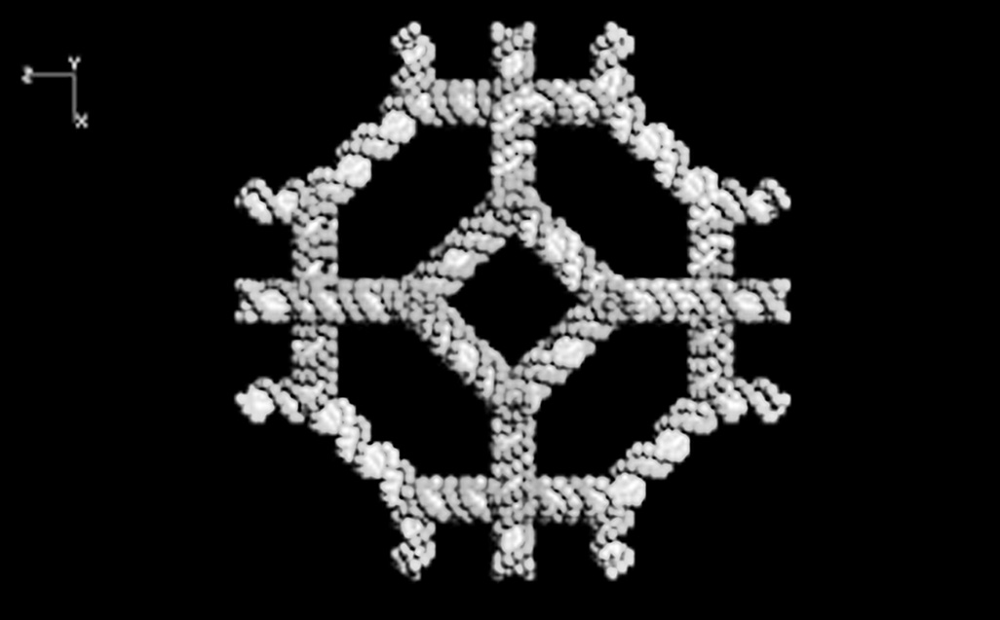
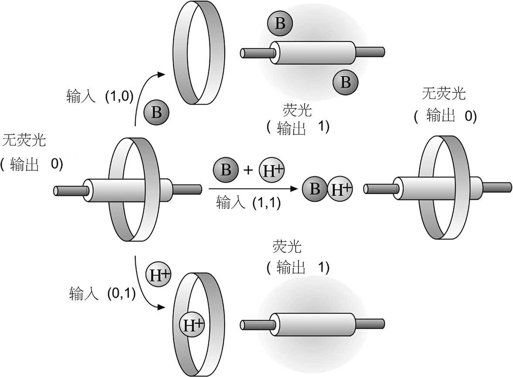

在最后，我们都留下了相同的疑问：生命是什么？至少在这本书里，我不会回答它。但是薛定谔给出的答案——负熵（参见第74页），尽管有一些缺陷，却不失为把握住了一丝的真理。负熵是生命所必要的特征，但不是充分的，它在混乱上推行着秩序。混乱就是死亡。如果细胞不能明晰地收发信息，如果细胞不能在正确的时间完成任务，如果细胞膜失去了组织性，如果蛋白质不能折叠，那么生命将无以为继。我们正是荒蛮世界中的秩序绿洲。
秩序从何而来？无机的物质也能够自发组织：想想成排的马尾云，或者是风吹沙土形成的规则纹路。似乎给系统提供能量防止达到稳态平衡，这类“自组织”就很有可能自发出现，而它在生命的秩序性中也发挥着作用。但仅仅如此还不够。细胞能复制染色体并一分为二，能反复制造出功能性的蛋白质分子，还能从单细胞的受精卵发育成多细胞的莫扎特，这期间所需要的协作配合不能只靠描画天空和沙漠的这种“盲目”的绘制过程。必须有一只手更为牢固地握住方向盘才可以。
我们都听过这只引导方向的大手的名字。它就是DNA，一串分子珠链，切开并打包成46捆小小的X形的染色体。人类的基因组——我们的全部DNA——常称作“生命之书”。在我写这本书时，科学家们刚刚结束了这部大书第一份草图的解码工作：他们绘制出了每条染色体上分子信息的大体细节。
关于人类基因组计划，社会上流传着一些不太谨慎的说法。比如有传言说，一个技艺足够高超的工程师仅用其中的信息就可以造出一个人。这是无稽之谈。人体中充满了各种并非靠基因组编码的分子，基因组所编码的只有蛋白质而已，甚至还编得有点杂乱、不完整。关于组成细胞膜的脂类，基因组什么都没说，更没提到这些脂类会如何在物理动力的作用下聚集成层状、环状和球状。基因也不会告诉我们神经信号如何工作，大脑如何利用精确定时的电脉冲序列来编码思想和感觉。也没有哪个基因是关于骨骼、牙釉质的。说基因组是细胞之书，就像是说字典是话剧《等待戈多》之书。它全部都在里面了，但你却无法由此推导及彼。
话说回来，基因组的确是 一部分子形式的指导手册。它告诉我们如何制造蛋白质，而蛋白质编导着生命壮阔的分子大戏。在这一章里，我想多谈一些这个剧本的本性——它是如何阅读，又是如何演出的。而我最终的目的还要更加宽泛。对于分子科学家而言，遗传学谈的其实是分子非常奇妙而深刻的一个特点——能够携带并传递信息。普林斯顿大学的理论生物学家约翰·霍普菲尔德指出，这是生物学用“存在性定理”来启发化学家的众多例子中的一个。他说：“数学家使用‘存在性定理’这个词，指的是证明他们想要构造的某种函数确实存在，而不是不可能的。从这种意义上讲，观察到鸟在飞就为工程师提供了一个存在性定理，证明我们能够设计出会飞的机器。”
根据同样的道理，遗传学向我们展示了利用分子进行计算是可能的。计算无非就是信息的存储、传输和处理，而基因机器可以完成所有这些。让-玛丽·莱恩说：“存在着一种‘生命有机体的分子逻辑’。”
这其实是上一章的推论，我们在上一章中已经看到，分子之间可以相互通信。而真正的分子逻辑含义更加确切：它不仅要求一个分子可以影响另一个分子的行为，还要求它们能以清楚严格的方式传输并操作经过编码的信息。计算机就是这样工作的：让数据在半导体和磁性材料制造的开关和存储器间进行传输。
用分子来计算仅仅是信息走进分子科学的其中一面。从更宽泛的方面来讲，化学家已经熟知了给分子编程让它们表现特定行为的思路；可以把性质编织到分子结构体中，就像对机器人编程、写入一系列指令那样。莱恩说：“其前景……是一种关于信息化物质的更广泛的科学。”这样的化学是真真正正的一种崭新的科学，在许多方面都与传统的制造实用物质的化学截然不同。这种科学是关于更加积极的“演化”的，而不再仅关乎消极的“存在”。它正在发生着，但我们还不知道它会带我们走向何方。
每一部书都用一种特定的语言写成，基因组也不例外。基因的语言是种简单的编码，它包含的字符是四种核苷酸分子，这些核苷酸分子就是DNA分子珠链上的珍珠（参见第42页）。每个核苷酸分子包含一个所谓的碱基，信息就编码在碱基当中。DNA中有四种碱基：腺嘌呤、胞嘧啶、鸟嘌呤和胸腺嘧啶（分别记作A、C、G、T）。DNA是核苷酸单元组成的线状聚合物，所以编码的信息就可以表示成四种字母组成的线状字符串。字符串可能会包含如下的一段：
GTGGATTGACATGATAGAAGCACTCTACTATATTC
只包含四种字母的字母表看似非常局限，不适于书写复杂的信息。但如果我们将这个序列看作一种密码，而不是严格地看作一种字母表，那么你想要多复杂它都能做得到。比如，我们可以将每个罗马字母表示成若干碱基的序列：GTG表示“a”，GAT表示“b”，等等等等。长度为三的四字符序列一共有64种，多于整个字母表的字母数量。使用这样的密码，我们就可以用AGCT的字符序列来书写《圣经》。
《圣经》里的信息对细胞来说没什么用，细胞需要的是能够用来制造蛋白质的信息。蛋白质长链如何折叠是由它的氨基酸序列所决定的（参见第41页），因此氨基酸序列就唯一地规定了制造蛋白质所需的“信息”。DNA编制这种信息所用的密码正如我们前面所提示的：三个碱基一组代表一种氨基酸。这就是遗传密码。 注
人们至今尚未完全理解一个特定的蛋白质序列会如何折叠它的链。也就是说，我们还不能够仅凭基因的序列就推断基因的功能（虽然我们有时可以大致猜到）。人类基因组的第一幅草图里面还充满着目的不明的基因。
不过细胞中信息流动的原理我们完全理清了。DNA是关于蛋白质信息的手册。我们可以认为每个染色体都是独立的一章，每个基因则是这一章中的一个单词（它们可是非常长的单词！），基因中的每个碱基三元组是单词中的一个字母。而蛋白质就是单词翻译出的另一种语言，新语言的每个字母是一个氨基酸。一般而言，只有当基因语言翻译出来以后我们才能理解它的含义。
DNA是一种双链的聚合物：两条链彼此扭曲盘旋，形成双螺旋。每条链都是一个核苷酸长串，信息就编码在里面。但两条链并非全同。这条链上的碱基可以和那条链上的碱基之间形成氢键（参见第41页），两条链就像拉链一样通过氢键相互嵌合。虽然所有的碱基都能形成氢键，但它们有特定的结合选择，A和T相结合，G和C相结合。所以DNA双螺旋包含的是互补的序列：每当A出现在这条链上，T就出现在那条链上，依此类推。这就意味着每个基因都写成了两个版本，以镜像的语言彼此呼应。
碱基这种两两成对的特性是它们的形状所决定的。碱基A和碱基G是相似的分子，C和T也是相似的分子。于是A-T组合体与C-G组合体的形状和大小大致相同。碱基对在两条螺旋链的内侧连接，像螺旋楼梯的台阶。只有台阶的尺寸都一致，两条链才能平顺地盘旋下去。若A与G结合就会鼓出一块，发生扭曲变形，破坏两条链的结合。同样，若C与T结合就会陷下去一块。另外，台阶中氢键的位置决定了A-C和G-T的组合也是不成立的。因此，其实是搭档间吻合的互补性 造就了碱基两两成对的偏好。
生物信息流动的一个关键要点是：数据的传输通过分子识别过程进行，确保信息的每一部分都得到正确的解读。
当细胞分裂时，DNA会进行复制，也就是基因组得到复制。因为两条链完全互补，所以它们都可以作为模板来组装新链。如果A总是优先与T配对，且依此类推，一条“赤裸的”单链就能引导游离的单个核苷酸按正确的顺序连成一线，形成一条互补链。
为了扮好模板的角色，双链首先会在特殊的酶的作用下拆成两条单链。然后沿着暴露的单链，互补链就被组装起来；称作DNA聚合酶的酶就催化了新核苷酸的加入。于是两组新的双螺旋都各含原先双螺旋中的一条链。
尽管酶能够帮助这一过程进行，但复制过程所必要的信息都已写入DNA模板当中了。1980年代初，加利福尼亚州索尔克研究所的莱斯利·奥格尔和同事们展示了在没有酶辅助的条件下，单体核苷酸也能够基于互补核苷酸的模板组装成聚合物。例如，一段八个C组成的RNA核苷酸序列，可以作为模板组装起八个G的核苷酸序列。不过奥格尔也不得不在其中做一点手脚，用的G核苷酸是通过加入活性化学基团“激化”过的，于是帮助它们连接起来。
这种模板辅助的聚合本身并不是复制：新链与模板是互补的，而不是全同的。第一例真正的人工分子复制是在1986年由德国化学家君特·冯·凯德罗夫斯基报告的。他使用同样的模板组装过程，但选择的是自补的模板，即自己与自己形成互补。他的模板是个含六核苷酸的DNA分子，序列为CCGCGG。因为双螺旋两条链的头尾方向关系是头对尾、尾对头，两者逆向对接，所以模板的互补序列与自身完全相同。君特·冯·凯德罗夫斯基从两种三核苷酸的片段出发，组装成模板的互补链，其中同样需要活化帮助它们连接起来（如图38）。

在出版这本书的某个阶段，我会从出版社收到校样——最终成书页面的初级版本，由我提供的原稿编辑而来。（但愿）它将会是我所写内容多多少少较为忠实的转录。但毫无疑问，其中总会散布着零星的小错，可能是打字错误，也可能是文件读取故障导致的。作者们对此习以为常，因为要复制一份很长且很复杂的信息总难免引入一些错误。
基因的转录（DNA复制为RNA）和翻译（RNA复制为蛋白质序列）过程同样如此。分子也不能永远都完美地识别，偶尔会有一个错误的核苷酸或氨基酸插入链中。大概每20个蛋白质中就有一个的制造过程出现差错。
这要紧吗？总的来看并不要紧。我和出版社不太可能在这本书付印之前找出所有打字错误。但很可能里面的错误都不太严重，不至于让你无法理解我的意思。类似地，在蛋白质中，链的大部分都是充当脚手架的作用，只是为了将个别要执行催化任务的氨基酸残基放在正确的位置上。所以发生在脚手架上的各处错误可能都不严重。有时一个错误也可能会导致产生的分子完全失效，但细胞对于任意特定任务会制造不止一种酶分子，而往往会造出几十种甚至上百种酶分子来执行这个任务，所以即使有一两种废品也没关系。
我这里所讲的是随机性 错误。而系统性 错误就要严重得多，它产生在生物信息流的上游位置，更靠近于信息存储的根源位置。若RNA分子转录有错，就会产生出上百个错误的蛋白质。因此，会有一些酶专门仔细检查转录过程中有没有产生复制差错，把错误的频率降低至大约万分之一。
但即使是转录中的错误也很少会造成很严重的后果，毕竟RNA分子很短命，细胞也总能造出更多的RNA来。而DNA里出现错误就糟了，因为一旦错误产生就没办法再去纠正。若基因中一个核苷酸放错位置，这段基因产生的RNA以及这些RNA再产生的蛋白质就都会含有相似的错误。更糟的是，由这个基因有错的细胞中分裂出去的后代所有细胞都继承了相同的缺陷。如果配子——精子或卵子细胞——带有基因缺陷，那么缺陷将传播至该配子所繁衍出的所有后代上。这就是为什么DNA复制时需要“校对”酶来极端认真地审核，它会保证平均每10亿个碱基中混入错误的数量不大于一。若缺少了这些校对分子，每产生一个新细胞就会得到大约1000个有缺陷的基因。
能遗传下去的错误，即制造配子时DNA复制发生的错误，就称作突变。一旦突变产生，它们就会沿着系谱树从亲代一直传到后代。突变是一些基因相关疾病的原因，如囊性纤维化疾病等；突变还会导致一些基因相关的易感体质，如易感癌症和心脏病等。尽管突变会导致这些可怕的后果，但它同时也是生命中的调味料。实际上，正是有了基因突变，才会有了我们人类的存在。如果在早期地球上热汤之中的低级单细胞生命体从不偶然发生突变，总能不带任何错误地复制相同的DNA，那么就不会有进化，也就不会出现更复杂的生命。
当出版社给我寄来校样时，文本必然会发生一点变化。校样中常出现一些我当初并没有写过的词语。但这并不是错误，而是完全合理的。它们其实是编辑所作的改动，而且我能肯定新的文本比我的原文更易于阅读和理解。
在1970年代中期，人们惊讶地发现基因同样也需要编辑。从DNA模板上直接脱离下来的RNA转录副本并不适于翻译成蛋白质，它含有很多无用的信息。这些“初级RNA转录副本”更像是语句中被随机插入了其他的语句碎片。RNA分子需要进行大量的编辑，才能表达清楚的信息，适于翻译。
这些插入的无用信息称作内含子，有时它们甚至会占据基因的大部分空间。它们并不用来编码蛋白质，所以也称为非编码序列。酶会在RNA初级转录副本中剪掉内含子，然后将编码区（称为外显子）的两段拼接起来。
“细胞之书”中遍布着杂乱的内容和无聊的重复，而上述只是其中一种形式。人们认为，整个人类基因组中只有百分之二到三的部分是用来编码蛋白质的。有的序列发生重复是有理由的。每个人的染色体都以TTAGGG重复约2500次结尾。这些片段称为端粒，人们认为它是用来保持染色体稳定的。细胞每分裂一次，它们就会被截短一次，这种侵蚀在老化过程中发挥了作用。但也有很多其他的重复序列并不具备有用的功能。转位子是一种能在基因组上跳来跳去的重复序列，每离开一处时就会留下一些副本。人们认为，这是一种居住在我们体内最核心处的基因寄生物，它们唯一的目的就是复制自己。内含子可能就是丧失了移动能力的远古转位子残余。
剪切、拼接、复制以及合成核酸的蛋白质机制为我们提供了基因生物技术的重要工具，让我们能够操纵基因组。比如限制酶就是能够识别特定DNA短序列并在该处切开链的蛋白质。连接酶能把DNA的松散端头连接起来。利用DNA聚合酶，我们可以在试管里无限地复制DNA片段。通过加热我们可以解开双链，进而用于模板复制。反复循环进行复制和加热，就可以成指数倍地增加DNA。这个过程就称为聚合酶链式反应（PCR），使用的酶是从在温泉中生活的细菌体内提取的DNA聚合酶。这种细菌的酶已经在进化中获得耐高温的能力，因此其DNA聚合酶不会被反复的加热破坏。
这些工具使得科学家们能够“改写细胞之书”，意即向生命体的基因组中插入新的基因。农作物科学家希望把抗虫、抗涝、抗除草剂基因植入植物中，还希望结合改进作物风味、提高增长率的基因。但这也有潜在的风险，具体而言，比如抗除草剂的基因有可能会从农作物体内转移到杂草的体内，产生“超级杂草”的新品种。人们尚不知晓这种基因跨物种“横向”转移的概率有多大。
有些人反对基因工程，认为篡改基本的生命材料DNA是违背伦理的，无论对象是细菌、人类、西红柿还是绵羊。这种反对意见是可以理解的，而且若以它不科学为由来驳斥就太傲慢了。不过这种意见的确与我们对生命分子基础的认识不太契合。一旦意识到我们的基因组成是多么随机——即便称不上任性，恐怕我们就很难再继续把它看作神圣不可侵犯的。我们的基因组里到处都是寄生着的废品，充斥着30亿年进化的残余。这套不成体统的文库里面似乎并没有什么优雅的、值得尊崇的东西，而真正值得尊崇的应该是蛋白质，一群群勤勤恳恳的蛋白质从长篇的废话中努力地筛选出有意义的片段。这一整套工作完成得如此之好，的确令人惊讶。但正如大多数生命现象一样，这也只是得过且过的办法，效率和整洁并不是重要的问题。
DNA是“信息物质”的一个极端例子。它以非常特殊的方式遵循程序组装起来，每个核苷酸都与它的互补位置相匹配，一直能让上千个碱基对相互匹配。这种程序化自组装正体现了超分子化学的一个重要目标。原子自身相互之间的区别并不太大，但超越原子这种基本的建造单元而考虑制造分子，超分子化学家就可以给他们的砖块和马达编制程序，加入更多的引导信息。
DNA提供给我们的并不仅仅是程序化自组装的存在性定理，它也提供了编制程序的具体方法。对于比细胞的双螺旋远为复杂的结构，我们完全可以利用碱基互补原理把DNA支架拼接起来。
纽约大学的纳德里安·希曼就探索了这样的概念。他使用生物技术中的酶工具将DNA剪切并拼接成漂亮的形体，比如他造出了一个笼子状的多面体——立方体加个截角八面体（如图39）。形体中的棱都是DNA双螺旋，每个顶角处都有三条螺旋会聚。这些会聚处都是精心编织而成的：双螺旋的两条链在此处分离，走向不同的棱，与新的链互补组成双螺旋。对于会聚处的情形，希曼和同事们先精心设计好DNA序列，合成序列然后再拼接。

巧妙之处在于该怎样把三棱会聚点组装成三维几何结构的分子物体。希曼让棱都带有“黏性端头”，在端头双螺旋的其中一条链长于另一条。于是暴露在外的未配对碱基在遇到互补链时就能够去配对。这样一来，端头就具有了带选择性的黏性，可以与别的端头结合，于是整个结构就可以程序化地从零部件开始建造起自身。一旦黏性端头通过碱基间的氢键与别的链结合起来，接合酶就会在它们之间锻压出强键，保证骨架的稳固。
目前为止，这些分子建造其实还只是愚笨的技巧表演，只不过展示了对分子识别实现惊人的控制，从而建造起纳米尺度的结构。但希曼提出，在他这种实验中，DNA框架有可能充当脚手架，有效地组装起其他分子和材料。例如，我们有可能在DNA链外部覆盖上银，于是就把它们转化为导电的分子导线。那么，是不是有可能某一天通过对导线进行“基因”编程，建造出微型的、按特定模式连接起来的电路呢？
此外，带黏性端头的DNA还能够有选择性地粘接成分子尺度的物体。伊利诺伊州西北大学的查德·米尔金和同事们利用这个思路将金的小微粒组装成团簇。小颗粒原本只有几个纳米大小，即所谓的纳米晶体。每个颗粒都带有一个标记单链DNA，但标记序列没有互补关系，所以微粒保持分离状态。研究者们向其中加入一种单链DNA，它的两端分别与标记序列互补，于是纳米微粒就被连接到了一起。结果得到的团簇能够强烈地散射蓝色光，于是溶液就变成了葡萄酒的颜色。米尔金和同事们现在正在研发该技术的商业用途，希望成为特定DNA单链序列的简单的可视化检测方法，而这种检测方法正是基因分析中普遍的需求。
有的研究人员希望通过将金属或半导体的纳米晶体组装成有秩序的阵列，来制造更小的电子器件，远小于当今用来制造硅芯片的传统微细加工技术所制造出的器件。半导体纳米晶体可以用作存放电子信息的存储元件，它们还能与光相互作用，用来制造光学信息处理器件。利用DNA连接来程序化地组装纳米晶体，有可能成为排列电路模式的一种方法。得克萨斯大学的安杰拉·贝尔彻和同事们的研究还提示了另一种可能的途径：他们利用的是蛋白质的分子识别性质，而没有利用DNA。他们研发出一种很小的多肽分子，能够识别不同种类的半导体，并粘接在其表面。这种多肽可以“感觉到”半导体晶体表面的原子是怎样组织的。也许有一天，可以给基因工程马达蛋白（参见第五章）装上这种识别特定半导体的多肽手臂，于是就能将纳米晶体拖拽到分子建造的位点附近，并把它们排列成电路的模式。
自从计算机在1940年代发明出来，新机器的计算能力大约每18个月就翻一倍。这种趋势就是以1965年首次提出者、英特尔的共同创始人戈登·摩尔的名字所命名的摩尔定律，它是由电路微型化驱动的。随着人们能够将更多的电路元件压缩在既定的空间中，计算能力就得到了提升。但如果摩尔定律还要继续维持25年以上，电子器件就必须减小到纳米量级，即分子的尺度。
但还没有人知道应该怎样去实现它，因为在这样的尺度下，集成电路的劳力——硅晶体管就会发生泄漏，不能用作开关。为了继续让计算机变得更快、更强，有一派思想正在不断壮大，认为元件必须变成单个分子。这种前景和传统的信息技术大不相同，投入在其中的人们堪称胆大、狂热的投机者。
但这也并不是个新的想法。早在1974年，美国化学家马克·拉特纳和阿里·艾维瑞姆就提出了一种单分子整流器（只允许一个方向电流通过的器件）的设计。仅仅数年之后，学者们就发现了能导电的碳基聚合物，并开始寄希望于这种材料的单分子能够用作“分子计算机”的导线。分子电子学 这一领域就此诞生。
但在接下来的约十年中，再没有更多的进展了。它只是一种超前于时代的思想，合成、排列、检测这种梦寐以求的分子器件的实验手段却是缺失的。而近些年来，好几条路径汇聚到一起，使这一领域复兴，并且分子电子学和它所附带的分子计算也最终得到来自重要人士——制造计算机的公司——的认真关注。
分子信息处理技术的一个核心要素就是开关——能替代晶体管的器件。用最初等的语言讲，开关能够处于两种不同的稳定状态——“开”和“关”。晶体管在“开”的时候导通电流，“关”的时候阻断电流。不过，开关之间只有在相互连接起来时才能有信息处理的用处，能够彼此通话，前后传递信息。而用分子实现这个目标很难。
1999年，加州大学洛杉矶分校的詹姆斯·希斯及合作者们宣布了这方面的成果，这是一项与计算机巨头惠普公司的合作。他们基于有机分子实现了数个开关的互连，制造出了电控制的逻辑门。
在计算机电路中，信息是以二进制形式编码的，即1和0组成的序列。信号1对应于一定电压的电脉冲，信号0对应于零电压。整个电路中只发送这两种信号，没有信号1/2或者信号2。数据编码成1和0的序列，正如同DNA将信息编码成核苷酸碱基序列。二进制编码比基因编码还要简单一些：它只有两种字符而已。编码信号中的每个信息单元——1或0——就称作一个二进制位，或者比特。
计算机使用逻辑门来操作二进制信息并进行计算，所谓逻辑门就是进行决策的器件或电路。逻辑门接收一个或多个输入信号，并发出一个或多个输出信号。而输出的信号依赖于输入的内容。以“与”门为例，它接收两个输入比特，产生一个输出比特。若两个输入均为1，则输出也为1；若其中任何一个输入为0，则输出为0。对类似这样的逻辑门进行简单地组合，就可以执行算术：例如，以二进制的形式读入两个数，产生的输出编码了两者之和或两者之差。
希斯和同事们用一种称作轮烷的分子开关构造了“与”门。轮烷是一种两分子的组合体，由一个环穿在一根棒上。棒的两端固定有大螺帽部件，防止环掉出。棒被设计得能够吸引环，于是两种分子混合时就自发套在一起。这之后再加入端头的螺帽。希斯在加州大学洛杉矶分校的同事弗雷泽·斯托达特 注 ，早在1980年代于英格兰的谢菲尔德大学就研发出一种技术，用以制造这种分子组合体。
研究者们将轮烷在金属电极上排布成一层，并在其上沉积很细的金属导线。在导线上施加电压，分子就从低导通状态切换到高导通状态。依附于单个导线上的数千个分子就组成了一个单个的、可切换状态的器件。研究者们将几个这种装置连接起来，制成了一个“与”门。
他们说，从原理上讲，应当可以用单个可切换状态的分子来制造这种器件。但在单个分子间进行电路连接很困难，也很难测量其间的微弱电流。但这也并非完全不可能。美国的马克·里德、詹姆斯·图尔和同事们就测量了连接两个金电极的单条“分子导线”上的电导率。
弗雷泽·斯托达特与博洛尼亚的温琴佐·巴尔扎尼以及其他同事们合作，展示了单分子制成的另一种不同的逻辑操作——“异或”门。和“与”门一样，“异或”门也有两个输入和一个输出。当输入信号不同时（0和1，或1和0），输出信号为1；当输入信号相同时（0和0，或1和1），输出信号为0。研究者们观察到准轮烷也有这样的行为特点。所谓准轮烷，也是一种环套棒型的分子组合体，但没有棒两端的阻挡，所以环有可能从棒上滑落。
这种装置的输入不是电信号，而是化学信号，产生的是光信号输出。也就是说，它能够根据“化学信号”究竟是“开”是“关”，即两种化学物质是否存在，来改变自身的光发射行为（荧光）（如图40）。这与细胞表面受体蛋白的工作方式颇为相似（参见第119页），受体蛋白能够根据它们是否结合了目标分子来发出某种信号。

利用相似的原理，北爱尔兰贝尔法斯特大学的A.普拉桑纳·德·席尔瓦和内森·麦克莱纳根结合了两种分子逻辑门，使它们能执行基本的算术。也就是说，他们能够使用分子来计数并完成简单的求和，诸如1+1=2。
当然，从计算一加一到制造可与硅基器件计算机相媲美的新计算机，还有相当长的距离。但这些研究已经展示了一个重要的原则：分子确能用于计算，且是在单分子器件的层面。它们最终让我们看到，分子计算机并不仅仅是个狡猾的广告。
我们越近距离地审视关于新计算机的想法，就越能够看到它与人体所面临的难题的相似之处：怎样随心所欲地排列分子，怎样传输并放大信号，怎样使导线在两个开关装置间生长出来（像神经元那样），怎样处理差错，怎样控制事务之间的相对时序。或许未来的计算机工程师也需要学习很多的生物学知识。
似乎是为了把DNA发挥到极致，近几年来一些科学家展示了DNA也能够执行计算。这让我们转了一大圈之后又回到起点，因为我在一开始就说到，DNA提供了分子计算的一种存在性证明。但在细胞中，它只提供了制造蛋白质的程序。从没有人想到DNA也能解决和计算机领域里一样的问题，直到1994年伦纳德·艾德曼才提出这个观点。艾德曼意识到，基因编码就像计算机科学中的二进制编码一样，也可以编码数学问题。他展示了如何利用生物技术操纵重组DNA来生成一个问题的各种可行解答。之后再使用DNA序列分析技术进行筛选，在所有可行解答中鉴别出正确的解答。
对于特定类型的数学问题，并没有用计算机找出正确解答的简便办法。计算机必须逐一检验所有可能的选项，从中挑出最优的一个。如果可行解答的数量太大，进行搜索就需要非常长的时间。这些都是用传统计算机最难以解决的一类问题。一个经典的例子是“旅行推销员”问题，问题内容是：给定大量的空间中的点（“城市”），求出能途经所有点各一次的最短路径。
艾德曼展示了，通过把DNA短片段打乱并拼接，问题的所有可行解答都可以在试管中编码成单链DNA分子。解答的数量可能非常巨大，但也比不上试管中的分子数量大。而且，所有可行解答都是同时产生并检验的，所以原则上DNA计算能够迅速地找出“最优”的解答。
无论DNA计算是否能够用于实践，它都有着寓言般的强大魅力。它把“生命分子基础的根源在于对信息的操作”这种观点演绎到了极致。人们常说，每个年代的人都倾向于用当时最先进技术所衍生出的模型来阐释世界，那么，面对那个困扰了霍尔丹、薛定谔和无数先贤的历史悠久的问题，或许身处信息时代的我们也应当谨慎，不要对这个（片面的）答案过于武断。或许更重要的是，我们应该把这看作一种启示，展示的是这个无限动态的、相互作用的、我们未曾看见又常常疏于讴歌的分子世界。